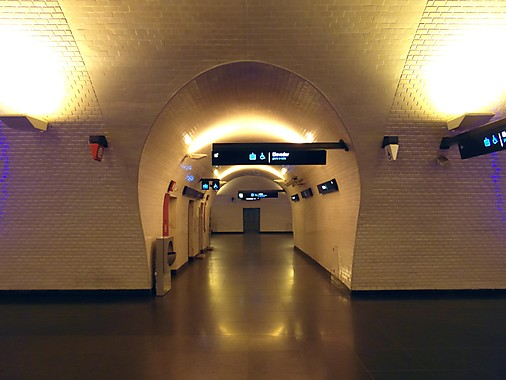

Lisbon Art and Architecture Guide

| Museums | Architecture |
|---|---|
| Calouste Gulbenkian Museum | Jeronimos Monastery |
| Ancient Art Museum | Belem Tower |
| Tile Museum | Saint George's Castle |
| Decorative Arts Museum | Gare do Oriente Station |
| Coaches Museum | Rectory of Universidade Nova de Lisboa |
| Maritime Museum | Baixa-Chiado Metro Station |
Work of Paul Truong Nguyen for CS545 Fall 2016. All images and text were taken from other websites as this was a class assignment, solely used for educational purposes only.